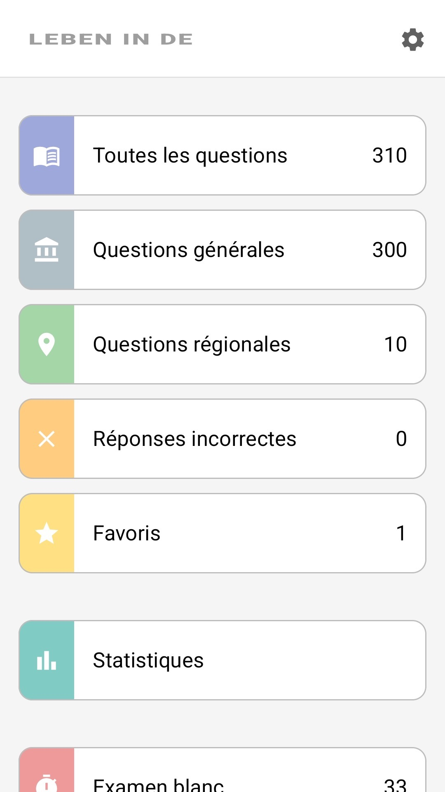
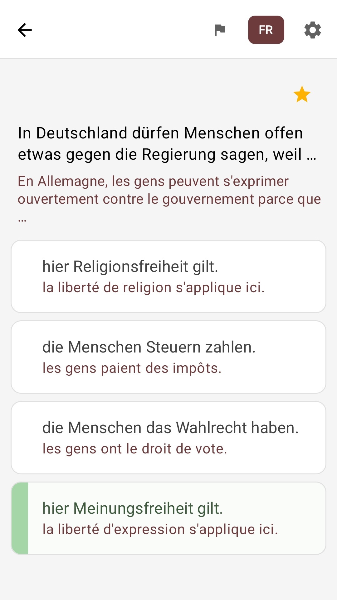

Les 310 questions
300 questions générales plus 10 questions pour votre Land — le catalogue officiel complet.
Leben in Deutschland · Einbürgerungstest
Les 310 questions officielles du test « Leben in Deutschland », traduites en français. Apprenez facilement, à votre rythme, sans connexion Internet.

Gratuit · Fonctionne hors ligne · Questions pour les 16 Länder

Chaque question s’affiche en allemand — exactement comme à l’examen — avec la traduction française juste en dessous. Vous apprenez à la fois le contenu et la formulation exacte que vous verrez le jour du test.
L’application propose des traductions dans plus de 100 langues — l’essentiel, c’est que la vôtre y soit déjà.
In Deutschland dürfen Menschen offen etwas gegen die Regierung sagen, weil …
En Allemagne, les gens ont le droit de critiquer ouvertement le gouvernement parce que…
hier Meinungsfreiheit gilt.
la liberté d’expression s’applique ici.
die Menschen Steuern zahlen.
les gens paient des impôts.
Question 1 sur 310 · masquez la traduction d’un simple appui
Les mêmes cartes que dans l’application : simples, claires, sans superflu.
300 questions générales plus 10 questions pour votre Land — le catalogue officiel complet.
Un test blanc : 33 questions et une limite de 60 minutes — les mêmes règles que l’examen officiel.
Après chaque réponse, vous voyez aussitôt si elle est juste ou fausse — vous apprenez en avançant.
Un mode dédié avec uniquement les questions auxquelles vous avez mal répondu — comblez vos lacunes efficacement.
Marquez d’une étoile les questions difficiles et revenez-y quand vous le souhaitez.
Révisez dans le métro, dans une file d’attente, n’importe où — aucune connexion Internet nécessaire.
L’interface est en français. Un design clair et sobre, sans superflu.



De l’installation à la préparation à l’examen.
Installez gratuitement, choisissez le français et votre Land.
Lisez les questions avec leur traduction, marquez les difficiles et revoyez vos erreurs.
Évaluez-vous en mode examen — puis présentez-vous au vrai test en toute confiance.
Gratuit. En français. Fonctionne hors ligne.
Il s’agit d’un projet éducatif privé, et non d’une application officielle de l’Office fédéral des migrations et des réfugiés (BAMF). L’application n’est affiliée à aucune autorité publique et ne représente aucune institution officielle.
Les questions du test sont basées sur le catalogue officiel de questions du BAMF. Le contenu original est publié en allemand dans le centre de test en ligne du BAMF.
Les traductions sont générées par IA pour aider les utilisateurs ayant une connaissance limitée de l’allemand et peuvent contenir des inexactitudes. Si vous pensez qu’une traduction mérite d’être améliorée, vous pouvez le signaler au développeur directement depuis l’application. Seul le texte allemand original des questions fait foi.
Le contenu de cette application est destiné uniquement à la préparation de l’examen. Malgré un soin attentif, nous ne garantissons pas l’exactitude, l’exhaustivité ou l’actualité des informations ; toute responsabilité pour des dommages directs ou indirects résultant de l’utilisation de cette application est exclue. Seuls les documents officiels du BAMF font foi.